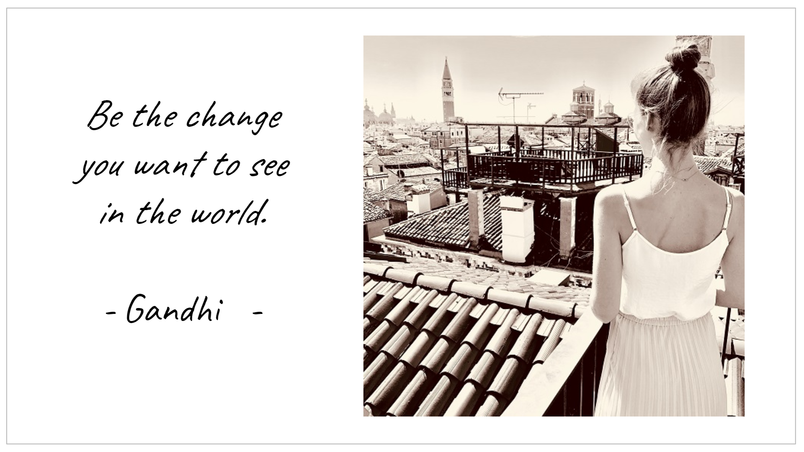

Hi, my name is Caro
I am an Industrial Engineer, former IT Consultant and Product Manager. In the last months I have ventured into software development. With this blog I want to make a little contribution to more diversity: more women in software development and less stereotypes.I live in Munich (please excuse my spelling mistakes - my mother language is german ;)) and besides antipasti from Viktualienmarkt I love cooking with fresh ingredients, fine coffee, yoga, podcasts from fascinating people and everything that makes our world so beautiful.

My mission
I firmly believe that digital products can improve our lives if we build the right products. In this respect, I can absolutely understand voices that criticize the excessive consumption of digital media etc. We have to use our skills to build meaningful products. Products that help us to live more sustainably, distribute resources more fairly, achieve medical progress and provide universal education.CoffeeCodeBreak is a Tech-Blog to motivate girls and women - but of course also everyone else who is interested - to deal with digital product development. This knowledge is not only in demand and a good investment in your future. It is the first step to building scalable products that everyone can access and that make a positive contribution to all of us.
And what is better than creating something that improves our lives? :)
Why CoffeeCodeBreak?
After high school, I was pretty lost. I was good at school everywhere and therefore I absolutely didn't know what to study. And because of the stereotypes of weird nerds having LAN parties in the basement, studying computer science would have been my last choice.Since Industrial Engineering is not a clear direction, this was a great opportunity to postpone the decision. And for people who still can't make up their minds after graduating, Industrial Engineering naturally leads to a job in consulting. So I have managed to slip through university and my career for the last 10 years without making any major decisions.
Of course, that doesn't work forever. Because at some point you start wondering if there is nothing you really want to do consciously and actively. During my time as an IT consultant and product manager, I was lucky enough to have a development team around every day. From the beginning I admired them for turning concepts into a visual product through code. And that fascinated me - with my natural urge to create beautiful things - so much so that I wanted to be able to do it myself at some point.
After I tried a little bit around, I decided to just try it. I took a few weeks to do online courses and learn programming. Already during the first course I noticed how much fun it was. Since I wanted to practice on a real project, I started to build a website. And so my first, small project became this blog.
CoffeeCodeBreak helps me to expand my own skills and knowledge. It allows me to be creative and offers me a platform to pursue my vision. And so it is also my gift to you. Here you can find everything about digital product development and working as a woman in the tech industry. I would like to support you in gaining insights into IT topics and to be able to participate confidently. And maybe I can even motivate you to learn programming yourself.
I believe that many more women, in particular, would have access to software and digital product development if this world presented itself less cryptic and edgy. Retrospectively, I would have been very grateful if a friend had told me how much fun it can be to develop software.
I am happy if I can inspire you a little bit and give you the insights I would have wished for myself! If you like my blog, tell your friends and colleagues about it. Also let's connect on LinkedIn!
See you soon!
Caro
Leave a comment
Feel free to leave me a comment. Your e-mail address will not be published. The fields marked with a * have to be filled out to send the comment. It may take a few hours until your comment is published.